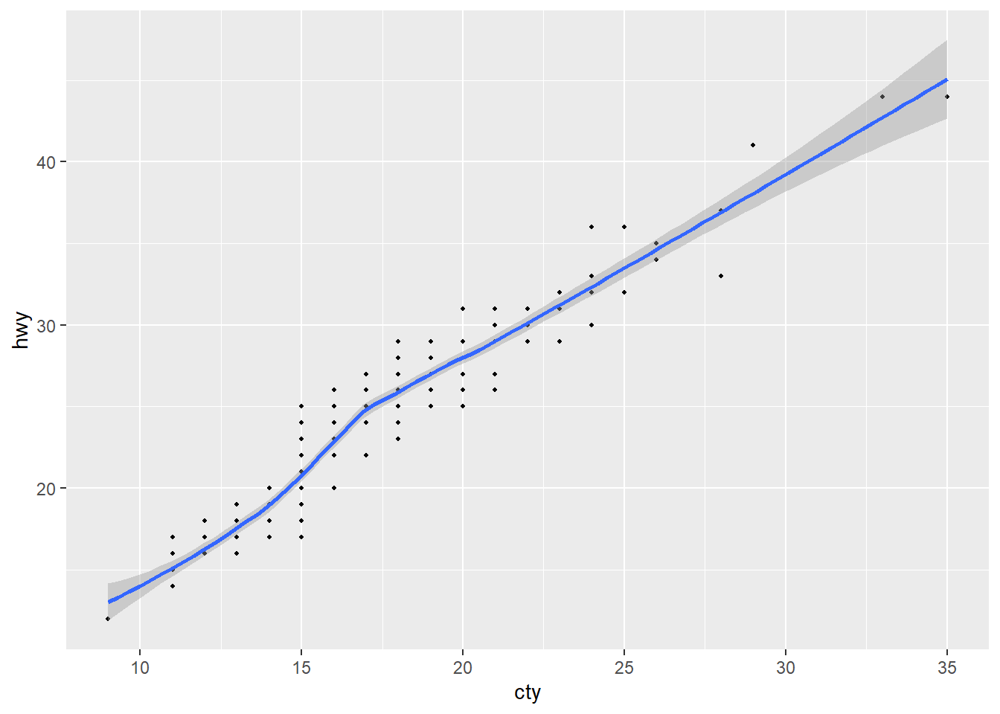
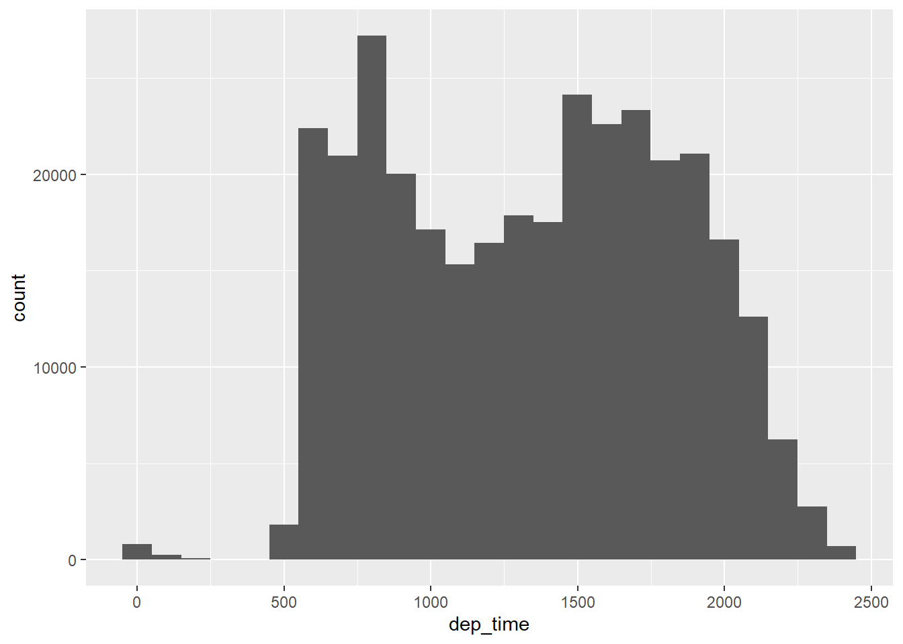
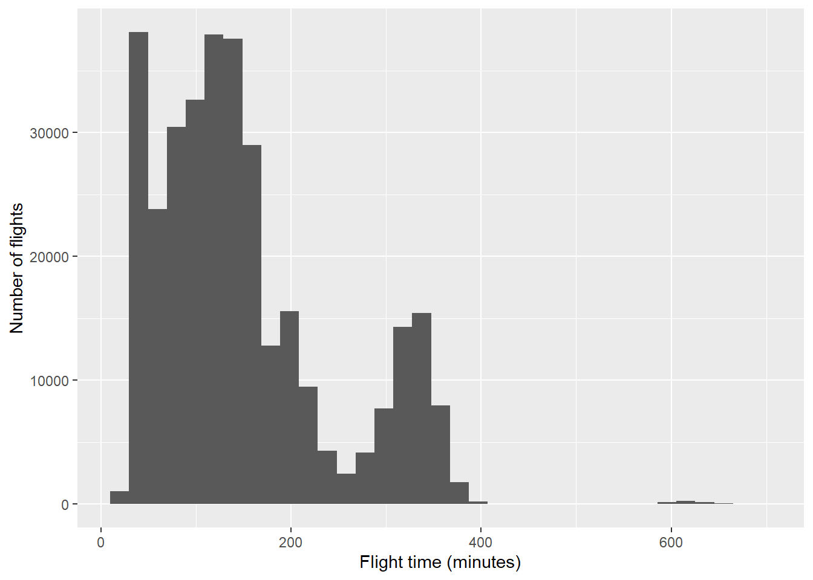
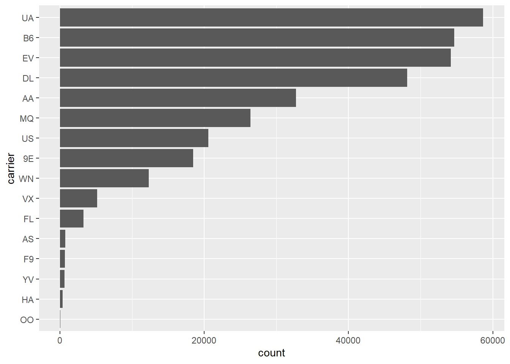
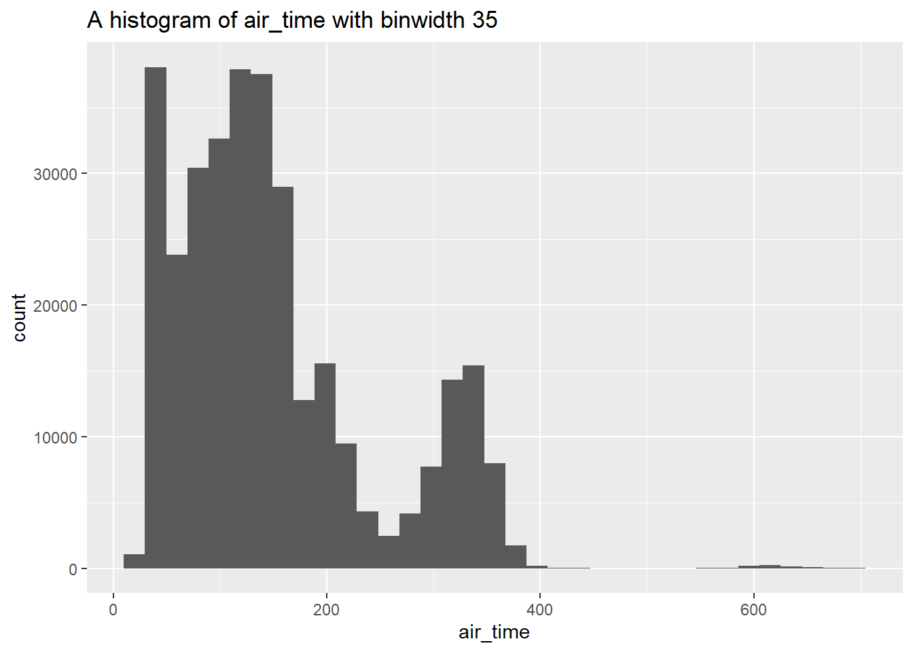

# Initial packages required (we'll be adding more)
library(tidyverse)
library(nycflights13)Functions and tidy evaluation
Based on Chapter 25 from R for Data Science
You can download this .qmd file from here. Just hit the Download Raw File button.
Introduction (from Ch 25 of R4DS)
One of the best ways to improve your reach as a data scientist is to write functions. Functions allow you to automate common tasks in a more powerful and general way than copy-and-pasting. Writing a function has four big advantages over using copy-and-paste:
- You can give a function an evocative name that makes your code easier to understand.
- As requirements change, you only need to update code in one place, instead of many.
- You eliminate the chance of making incidental mistakes when you copy and paste (i.e. updating a variable name in one place, but not in another).
- It makes it easier to reuse work from project-to-project, increasing your productivity over time.
A good rule of thumb is to consider writing a function whenever you’ve copied and pasted a block of code more than twice (i.e. you now have three copies of the same code). In this chapter, you’ll learn about three useful types of functions:
- Vector functions take one or more vectors as input and return a vector as output.
- Data frame functions take a data frame as input and return a data frame as output.
- Plot functions that take a data frame as input and return a plot as output.
Do not Repeat Yourself: Also known as DRY, if you copy or paste code more than twice, you should write a function instead.
When writing a function, it is usually best to start with the code you know works for one instance, and then “function-ize” it.
Vector functions
Example 1: Rescale variables from 0 to 1.
This code creates a 10 x 4 tibble filled with random values taken from a normal distribution with mean 0 and SD 1
df <- tibble(
a = rnorm(10),
b = rnorm(10),
c = rnorm(10),
d = rnorm(10)
)
df# A tibble: 10 × 4
a b c d
<dbl> <dbl> <dbl> <dbl>
1 0.909 0.127 2.52 1.31
2 1.51 0.153 0.107 0.510
3 -1.13 0.570 -1.41 1.39
4 -0.358 1.79 0.560 -0.0383
5 0.302 0.167 0.208 -0.142
6 0.369 -1.33 0.992 0.268
7 -0.591 -1.22 0.0710 0.495
8 -0.181 1.38 -0.383 -0.304
9 0.531 -0.255 -0.613 1.27
10 0.626 -2.44 0.00757 -0.208 This code below for rescaling variables from 0 to 1 is ripe for functions… we did it four times!
It’s easiest to start with working code and turn it into a function.
df$a <- (df$a - min(df$a)) / (max(df$a) - min(df$a))
df$b <- (df$b - min(df$b)) / (max(df$b) - min(df$b))
df$c <- (df$c - min(df$c)) / (max(df$c) - min(df$c))
df$d <- (df$d - min(df$d)) / (max(df$d) - min(df$d))
df# A tibble: 10 × 4
a b c d
<dbl> <dbl> <dbl> <dbl>
1 0.774 0.607 1 0.956
2 1 0.613 0.386 0.481
3 0 0.712 0 1
4 0.294 1 0.501 0.157
5 0.544 0.616 0.412 0.0957
6 0.569 0.261 0.611 0.338
7 0.205 0.287 0.377 0.472
8 0.361 0.904 0.262 0
9 0.631 0.517 0.203 0.932
10 0.667 0 0.361 0.0563Notice first what changes and what stays the same in each line. Then, if we look at the first line above, we see we have one value we’re using over and over: df$a. So our function will have one input. We’ll start with our code from that line, then replace the input (df$a) with x. We should give our function a name that explains what it does. The name should be a verb.
# I'm going to show you how to write the function in class!
# I have it in the code already below, but don't look yet!
# Let's try to write it together first!. . . . . . . . .
# Our function (first draft!)
rescale01 <- function(x) {
(x - min(x)) / (max(x) - min(x))
}Note the general form of a function:
name <- function(arguments) {
body
}Every function contains 3 essential components:
- A name. The name should clearly evoke what the function does; hence, it is often a verb (action). Here we’ll use rescale01 because this function rescales a vector to lie between 0 and 1. snake_case is good; CamelCase is just okay.
- The arguments. The arguments are things that vary across calls and they are usually nouns - first the data, then other details. Our analysis above tells us that we have just one; we’ll call it x because this is the conventional name for a numeric vector, but you can use any word.
- The body. The body is the code that’s repeated across all the calls. By default a function will return the last statement; use
return()to specify a return value
Summary: Functions should be written for both humans and computers!
Once we have written a function we like, then we need to test it with different inputs!
temp <- c(4, 6, 8, 9)
rescale01(temp)[1] 0.0 0.4 0.8 1.0temp0 <- c(4, 6, 8, 9, NA)
rescale01(temp0)[1] NA NA NA NA NAOK, so NA’s don’t work the way we want them to.
rescale01 <- function(x) {
(x - min(x, na.rm = TRUE)) / (max(x, na.rm = TRUE) - min(x, na.rm = TRUE))
}
rescale01(temp)[1] 0.0 0.4 0.8 1.0rescale01(temp0)[1] 0.0 0.4 0.8 1.0 NAWe can continue to improve our function. Here is another method, which uses the existing range function within R to avoid 3 max/min executions:
rescale01 <- function(x) {
rng <- range(x, na.rm = TRUE)
(x - rng[1]) / (rng[2] - rng[1])
}
rescale01(temp)[1] 0.0 0.4 0.8 1.0rescale01(c(0, 5, 10))[1] 0.0 0.5 1.0rescale01(c(-10, 0, 10))[1] 0.0 0.5 1.0rescale01(c(1, 2, 3, NA, 5))[1] 0.00 0.25 0.50 NA 1.00We should continue testing unusual inputs. Think carefully about how you want this function to behave… the current behavior is to include the Inf (infinity) value when calculating the range. You get strange output everywhere, but it’s pretty clear that there is a problem right away when you use the function. In the example below (rescale1), you ignore the infinity value when calculating the range. The function returns Inf for one value, and sensible stuff for the rest. In many cases this may be useful, but it could also hide a problem until you get deeper into an analysis.
x <- c(1:10, Inf)
rescale01(x) [1] 0 0 0 0 0 0 0 0 0 0 NaNrescale1 <- function(x) {
rng <- range(x, na.rm = TRUE, finite = TRUE)
(x - rng[1]) / (rng[2] - rng[1])
}
rescale1(x) [1] 0.0000000 0.1111111 0.2222222 0.3333333 0.4444444 0.5555556 0.6666667
[8] 0.7777778 0.8888889 1.0000000 InfNow we’ve used functions to simplify original example. We will learn to simplify further in iterations (Ch 26)
df <- tibble(
a = rnorm(10),
b = rnorm(10),
c = rnorm(10),
d = rnorm(10)
)
# add a little noise
df$a[5] = NA
df$b[6] = Inf
df# A tibble: 10 × 4
a b c d
<dbl> <dbl> <dbl> <dbl>
1 -0.575 0.281 -0.722 -0.238
2 -1.71 -1.40 0.392 1.15
3 0.622 -0.434 -0.952 -0.604
4 -0.555 0.263 -1.67 1.86
5 NA -0.479 -0.932 0.234
6 -0.394 Inf -1.49 -1.47
7 -1.70 -0.852 1.44 -0.770
8 -1.23 1.23 0.0800 1.26
9 -0.639 0.970 -0.965 -0.396
10 -0.142 -0.120 -1.58 -1.74 df$a_new <- rescale1(df$a)
df$b_new <- rescale1(df$b)
df$c_new <- rescale1(df$c)
df$d_new <- rescale1(df$d)
df# A tibble: 10 × 8
a b c d a_new b_new c_new d_new
<dbl> <dbl> <dbl> <dbl> <dbl> <dbl> <dbl> <dbl>
1 -0.575 0.281 -0.722 -0.238 0.487 0.638 0.304 0.417
2 -1.71 -1.40 0.392 1.15 0 0 0.663 0.804
3 0.622 -0.434 -0.952 -0.604 1 0.367 0.230 0.315
4 -0.555 0.263 -1.67 1.86 0.495 0.632 0 1
5 NA -0.479 -0.932 0.234 NA 0.349 0.236 0.548
6 -0.394 Inf -1.49 -1.47 0.564 Inf 0.0573 0.0745
7 -1.70 -0.852 1.44 -0.770 0.00287 0.208 1 0.269
8 -1.23 1.23 0.0800 1.26 0.207 1 0.562 0.835
9 -0.639 0.970 -0.965 -0.396 0.459 0.900 0.226 0.373
10 -0.142 -0.120 -1.58 -1.74 0.672 0.486 0.0282 0 df %>%
mutate(a_new = rescale1(a),
b_new = rescale1(b),
c_new = rescale1(c),
d_new = rescale1(d))# A tibble: 10 × 8
a b c d a_new b_new c_new d_new
<dbl> <dbl> <dbl> <dbl> <dbl> <dbl> <dbl> <dbl>
1 -0.575 0.281 -0.722 -0.238 0.487 0.638 0.304 0.417
2 -1.71 -1.40 0.392 1.15 0 0 0.663 0.804
3 0.622 -0.434 -0.952 -0.604 1 0.367 0.230 0.315
4 -0.555 0.263 -1.67 1.86 0.495 0.632 0 1
5 NA -0.479 -0.932 0.234 NA 0.349 0.236 0.548
6 -0.394 Inf -1.49 -1.47 0.564 Inf 0.0573 0.0745
7 -1.70 -0.852 1.44 -0.770 0.00287 0.208 1 0.269
8 -1.23 1.23 0.0800 1.26 0.207 1 0.562 0.835
9 -0.639 0.970 -0.965 -0.396 0.459 0.900 0.226 0.373
10 -0.142 -0.120 -1.58 -1.74 0.672 0.486 0.0282 0 # Even better - from Chapter 26
df |> mutate(across(a:d, rescale1))# A tibble: 10 × 8
a b c d a_new b_new c_new d_new
<dbl> <dbl> <dbl> <dbl> <dbl> <dbl> <dbl> <dbl>
1 0.487 0.638 0.304 0.417 0.487 0.638 0.304 0.417
2 0 0 0.663 0.804 0 0 0.663 0.804
3 1 0.367 0.230 0.315 1 0.367 0.230 0.315
4 0.495 0.632 0 1 0.495 0.632 0 1
5 NA 0.349 0.236 0.548 NA 0.349 0.236 0.548
6 0.564 Inf 0.0573 0.0745 0.564 Inf 0.0573 0.0745
7 0.00287 0.208 1 0.269 0.00287 0.208 1 0.269
8 0.207 1 0.562 0.835 0.207 1 0.562 0.835
9 0.459 0.900 0.226 0.373 0.459 0.900 0.226 0.373
10 0.672 0.486 0.0282 0 0.672 0.486 0.0282 0 Options for handling NAs in functions
Before we try some practice problems, let’s consider various options for handling NAs in functions. We used the na.rm option within functions like min, max, and range in order to take care of missing values. But there are alternative approaches:
- filter/remove the NA values before rescaling
- create an if statement to check if there are NAs; return an error if NAs exist
- create a removeNAs option in the function we are creating
Let’s take a look at each alternative approach in turn:
Filter/remove the NA values before rescaling
df <- tibble(
a = rnorm(10),
b = rnorm(10),
c = rnorm(10),
d = rnorm(10)
)
df$a[5] = NA
df# A tibble: 10 × 4
a b c d
<dbl> <dbl> <dbl> <dbl>
1 -0.714 -0.156 -0.283 2.00
2 -0.381 -1.92 -1.09 0.682
3 -1.80 1.02 0.896 0.794
4 -0.0880 0.828 -0.478 -0.825
5 NA -0.617 -0.652 -0.966
6 -1.60 -1.70 -0.157 -0.379
7 -1.47 0.363 -0.398 0.961
8 0.355 -0.475 1.85 -0.381
9 -0.805 1.39 -0.667 -0.625
10 0.834 2.42 -0.968 -0.264rescale_basic <- function(x) {
(x - min(x)) / (max(x) - min(x))
}
df %>%
filter(!is.na(a)) %>%
mutate(new_a = rescale_basic(a))# A tibble: 9 × 5
a b c d new_a
<dbl> <dbl> <dbl> <dbl> <dbl>
1 -0.714 -0.156 -0.283 2.00 0.413
2 -0.381 -1.92 -1.09 0.682 0.539
3 -1.80 1.02 0.896 0.794 0
4 -0.0880 0.828 -0.478 -0.825 0.650
5 -1.60 -1.70 -0.157 -0.379 0.0776
6 -1.47 0.363 -0.398 0.961 0.125
7 0.355 -0.475 1.85 -0.381 0.818
8 -0.805 1.39 -0.667 -0.625 0.379
9 0.834 2.42 -0.968 -0.264 1 [Pause to Ponder:] Do you notice anything in the output above that gives you pause?
Create an if statement to check if there are NAs; return an error if NAs exist
First, here’s an example involving weighted means:
# Create function to calculate weighted mean
wt_mean <- function(x, w) {
sum(x * w) / sum(w)
}
wt_mean(c(1, 10), c(1/3, 2/3))[1] 7wt_mean(1:6, 1:3)[1] 7.666667[Pause to Ponder:] Why is the answer to the last call above 7.67??
# update function to handle cases where data and weights of unequal length
wt_mean <- function(x, w) {
if (length(x) != length(w)) {
stop("`x` and `w` must be the same length", call. = FALSE)
} else {
sum(w * x) / sum(w)
}
}
wt_mean(1:6, 1:3) Error: `x` and `w` must be the same length# should produce an error now if weights and data different lengths
# - nice example of if and else[Pause to Ponder:] What does the call. option do?
Now let’s apply this to our rescaling function
rescale_w_error <- function(x) {
if (is.na(sum(x))) {
stop("`x` cannot have NAs", call. = FALSE)
} else {
(x - min(x)) / (max(x) - min(x))
}
}
temp <- c(4, 6, 8, 9)
rescale_w_error(temp)[1] 0.0 0.4 0.8 1.0temp <- c(4, 6, 8, 9, NA)
rescale_w_error(temp)Error: `x` cannot have NAs[Pause to Ponder:] Why can’t we just use if (is.na(x)) instead of is.na(sum(x))?
Create a removeNAs option in the function we are creating
rescale_NAoption <- function(x, removeNAs = FALSE) {
(x - min(x, na.rm = removeNAs)) /
(max(x, na.rm = removeNAs) - min(x, na.rm = removeNAs))
}
temp <- c(4, 6, 8, 9)
rescale_NAoption(temp)[1] 0.0 0.4 0.8 1.0temp <- c(4, 6, 8, 9, NA)
rescale_NAoption(temp, removeNAs = TRUE)[1] 0.0 0.4 0.8 1.0 NAOK, but all the other summary stats functions use na.rm as the input, so to be consistent, it’s probably better to do something slightly awkward like this:
rescale_NAoption <- function(x, na.rm = FALSE) {
(x - min(x, na.rm = na.rm)) /
(max(x, na.rm = na.rm) - min(x, na.rm = na.rm))
}
temp <- c(4, 6, 8, 9, NA)
rescale_NAoption(temp, na.rm = TRUE)[1] 0.0 0.4 0.8 1.0 NAwt_mean() is an example of a “summary function (single value output) instead of a”mutate function” (vector output) like rescale01(). Here’s another summary function to produce the mean absolute percentage error:
mape <- function(actual, predicted) {
sum(abs((actual - predicted) / actual)) / length(actual)
}
y <- c(2,6,3,8,5)
yhat <- c(2.5, 5.1, 4.4, 7.8, 6.1)
mape(actual = y, predicted = yhat)[1] 0.2223333Data frame functions
These work like dplyr verbs, taking a data frame as the first argument, and then returning a data frame or a vector.
Demonstration of tidy evaluation in functions
# Start with working code then functionize
ggplot(data = mpg, mapping = aes(x = cty, y = hwy)) +
geom_point(size = 0.75) +
geom_smooth()`geom_smooth()` using method = 'loess' and formula = 'y ~ x'
make_plot <- function(dataset, xvar, yvar, pt_size = 0.75) {
ggplot(data = dataset, mapping = aes(x = xvar, y = yvar)) +
geom_point(size = pt_size) +
geom_smooth()
}
make_plot(dataset = mpg, xvar = cty, yvar = hwy) # Error!Error in `geom_point()`:
! Problem while computing aesthetics.
ℹ Error occurred in the 1st layer.
Caused by error:
! object 'cty' not foundThe problem is tidy evaluation, which makes most common coding easier, but makes some less common things harder. Key terms to understand tidy evaluation:
- env-variables = live in the environment (mpg)
- data-variables = live in data frame or tibble (cty)
- data masking = tidyverse use data-variables as if env-variables. That is, you don’t always need
mpg$ctyto accessctyin tidyverse
The key idea behind data masking is that it blurs the line between the two different meanings of the word “variable”:
- env-variables are “programming” variables that live in an environment. They are usually created with <-.
- data-variables are “statistical” variables that live in a data frame. They usually come from data files (e.g. .csv, .xls), or are created manipulating existing variables.
The solution is to embrace {{ }} data-variables which are user inputs into functions. One way to remember what’s happening, as suggested by our book authors, is to think of {{ }} as looking down a tunnel — {{ var }} will make a dplyr function look inside of var rather than looking for a variable called var.
See Section 25.3 of R4DS for more details (and there are plenty!).
# This will work to make our plot!
make_plot <- function(dataset, xvar, yvar, pt_size = 0.75) {
ggplot(data = dataset, mapping = aes(x = {{ xvar }}, y = {{ yvar }})) +
geom_point(size = pt_size) +
geom_smooth()
}
make_plot(dataset = mpg, xvar = cty, yvar = hwy)`geom_smooth()` using method = 'loess' and formula = 'y ~ x'
I often wish it were easier to get my own custom summary statistics for numeric variables in EDA rather than using mosaic:favstats(). Using group_by() and summarise() from the tidyverse reads clearly but takes so many lines, but if I only had to write the code once…
summary6 <- function(data, var) {
data |> summarize(
min = min({{ var }}, na.rm = TRUE),
mean = mean({{ var }}, na.rm = TRUE),
median = median({{ var }}, na.rm = TRUE),
max = max({{ var }}, na.rm = TRUE),
n = n(),
n_miss = sum(is.na({{ var }})),
.groups = "drop" # to leave the data in an ungrouped state
)
}
mpg |> summary6(hwy)# A tibble: 1 × 6
min mean median max n n_miss
<int> <dbl> <dbl> <int> <int> <int>
1 12 23.4 24 44 234 0Even cooler, I can use my new function with group_by()!
mpg |>
group_by(drv) |>
summary6(hwy)# A tibble: 3 × 7
drv min mean median max n n_miss
<chr> <int> <dbl> <dbl> <int> <int> <int>
1 4 12 19.2 18 28 103 0
2 f 17 28.2 28 44 106 0
3 r 15 21 21 26 25 0You can even pass conditions into a function using the embrace:
[Pause to Ponder:] Predict what the code below will do, then uncomment it and run it to check. Think about: why use sort = sort? why not embrace df? why didn’t we need n in the arguments?
#new_function <- function(df, var, condition, sort = TRUE) {
# df |>
# filter({{ condition }}) |>
# count({{ var }}, sort = sort) |>
# mutate(prop = n / sum(n))
#}
#mpg |> new_function(var = manufacturer,
# condition = manufacturer %in% c("audi", "honda", "hyundai", "nissan", "subaru", "toyota", "volkswagen"))Data-masking vs. tidy-selection (Section 25.3.4)
Why doesn’t the following code work?
count_missing <- function(df, group_vars, x_var) {
df |>
group_by({{ group_vars }}) |>
summarize(
n_miss = sum(is.na({{ x_var }})),
.groups = "drop"
)
}
flights |>
count_missing(c(year, month, day), dep_time)Error in `group_by()`:
ℹ In argument: `c(year, month, day)`.
Caused by error:
! `c(year, month, day)` must be size 336776 or 1, not 1010328.The problem is that group_by() uses data-masking rather than tidy-selection. These are the two most common subtypes of tidy evaluation:
- Data-masking is used in functions like arrange(), filter(), and summarize() that compute with variables. Data masking is an R feature that blends programming variables that live inside environments (env-variables) with statistical variables stored in data frames (data-variables).
- Tidy-selection is used for functions like select(), relocate(), and rename() that select variables. Tidy selection provides a concise dialect of R for selecting variables based on their names or properties.
More detail can be found here.
The error above can be solved by using the pick() function:
count_missing <- function(df, group_vars, x_var) {
df |>
group_by(pick({{ group_vars }})) |>
summarize(
n_miss = sum(is.na({{ x_var }})),
.groups = "drop"
)
}
flights |>
count_missing(c(year, month, day), dep_time)# A tibble: 365 × 4
year month day n_miss
<int> <int> <int> <int>
1 2013 1 1 4
2 2013 1 2 8
3 2013 1 3 10
4 2013 1 4 6
5 2013 1 5 3
6 2013 1 6 1
7 2013 1 7 3
8 2013 1 8 4
9 2013 1 9 5
10 2013 1 10 3
# ℹ 355 more rows[Pause to Ponder:] Here’s another nice use of pick(). Predict what the function will do, then uncomment the code to see if you are correct.
# Source: https://twitter.com/pollicipes/status/1571606508944719876
#new_function <- function(data, rows, cols) {
# data |>
# count(pick(c({{ rows }}, {{ cols }}))) |>
# pivot_wider(
# names_from = {{ cols }},
# values_from = n,
# names_sort = TRUE,
# values_fill = 0
# )
#}
#mpg |> new_function(c(manufacturer, model), cyl)Plot functions
Let’s say you find yourself making a lot of histograms:
flights |>
ggplot(aes(x = dep_time)) +
geom_histogram(bins = 25)
flights |>
ggplot(aes(x = air_time)) +
geom_histogram(bins = 35)
Just use embrace to create a histogram-making function
histogram <- function(df, var, bins = NULL) {
df |>
ggplot(aes(x = {{ var }})) +
geom_histogram(bins = bins)
}
flights |> histogram(air_time, 35)
Since histogram() returns a ggplot, you can add any layers you want
flights |>
histogram(air_time, 35) +
labs(x = "Flight time (minutes)", y = "Number of flights")
You can also combine data wrangling with plotting. Note that we need the “walrus operator” (:=) since the variable name on the left is being generated with user-supplied data.
# sort counts with highest values at top and counts on x-axis
sorted_bars <- function(df, var) {
df |>
mutate({{ var }} := fct_rev(fct_infreq({{ var }}))) |>
ggplot(aes(y = {{ var }})) +
geom_bar()
}
flights |> sorted_bars(carrier)
Finally, it would be really helpful to label plots based on user inputs. This is a bit more complicated, but still do-able!
For this, we’ll need the rlang package. rlang is a low-level package that’s used by just about every other package in the tidyverse because it implements tidy evaluation (as well as many other useful tools).
Check out the following update of our histogram() function which uses the englue() function from the rlang package:
histogram <- function(df, var, bins) {
label <- rlang::englue("A histogram of {{var}} with binwidth {bins}")
df |>
ggplot(aes(x = {{ var }})) +
geom_histogram(bins = bins) +
labs(title = label)
}
flights |> histogram(air_time, 35)
On Your Own
Rewrite this code snippet as a function:
x / sum(x, na.rm = TRUE). This code creates weights which sum to 1, where NA values are ignored. Test it for at least two different vectors. (Make sure at least one has NAs!)Create a function to calculate the standard error of a variable, where SE = square root of the variance divided by the sample size. Hint: start with a vector like
x <- 0:5orx <- gss_cat$ageand write code to find the SE of x, then turn it into a function to handle any vectorx. Note:varis the function to find variance in R andsqrtdoes square root.lengthwill also be handy. Test your function on two vectors that do not include NAs (i.e. do not worry about removing NAs at this point).Use your
sefunction within summarize to get a table of the mean and s.e. ofhwyandctybyclassin thempgdataset.Use your
sefunction within summarize to get a table of the mean and s.e. ofarr_delayanddep_delayby carrier in theflightsdataset. Why does the output look like this?Make your
sefunction handle NAs with an na.rm option. Test your new function (you can call itseagain) on a vector that doesn’t include NA and on the same vector with an added NA. Be sure to check that it gives the expected output with na.rm = TRUE and na.rm = FALSE. Make na.rm = FALSE the default value. Repeat #4. (Hint: be sure when you divide by sample size you don’t count any NAs)Create
both_na(), a function that takes two vectors of the same length and returns how many positions have an NA in both vectors. Hint: create two vectors liketest_x <- c(1, 2, 3, NA, NA)andtest_y <- c(NA, 1, 2, 3, NA)and write code that works fortest_xandtest_y, then turn it into a function that can handle anyxandy. (In this case, the answer would be 1, since both vectors have NA in the 5th position.) Test it for at least one more combination ofxandy.Run your code from (6) with the following two vectors:
test_x <- c(1, 2, 3, NA, NA, NA)andtest_y <- c(NA, 1, 2, 3, NA). Did you get the output you wanted or expected? Modify your function usingif,else, andstopto print an error if x and y are not the same length. Then test again withtest_x,test_yand the sets of vectors you used in (6).Here is a way to get
not_cancelledflights in the flights dataset:
not_cancelled <- flights %>%
filter(!is.na(dep_delay), !is.na(arr_delay))Is it necessary to check is.na for both departure and arrival? Using summarize, find the number of flights missing departure delay, arrival delay, and both. (Use your new function!)
- Read the code for each of the following three functions, puzzle out what they do, and then brainstorm better names.
f1 <- function(time1, time2) {
hour1 <- time1 %/% 100
min1 <- time1 %% 100
hour2 <- time2 %/% 100
min2 <- time2 %% 100
(hour2 - hour1)*60 + (min2 - min1)
}
f2 <- function(lengthcm, widthcm) {
(lengthcm / 2.54) * (widthcm / 2.54)
}
f3 <- function(x) {
fct_collapse(x, "non answer" = c("No answer", "Refused",
"Don't know", "Not applicable"))
}- Explain what the following function does and demonstrate by running
foo1(x)with a few appropriately chosen vectorsx. (Hint: set x and run the “guts” of the function piece by piece.)
foo1 <- function(x) {
diff <- x[-1] - x[1:(length(x) - 1)]
sum(diff < 0)
}The
foo1()function doesn’t perform well if a vector has missing values. Amendfoo1()so that it produces a helpful error message and stops if there are any missing values in the input vector. Show that it works with appropriately chosen vectorsx. Be sure you adderror = TRUEto your R chunk, or else knitting will fail!Write a function called
greetusingif,else if, andelseto print out “good morning” if it’s before 12 PM, “good afternoon” if it’s between 12 PM and 5 PM, and “good evening” if it’s after 5 PM. Your function should work if you input a time like:greet(time = "2018-05-03 17:38:01 CDT")or if you input the current time withgreet(time = Sys.time()). [Hint: check out thehourfunction in thelubridatepackage]Write a function called
summary_stats()to produce a custom set of summary statistics (n, mean, median, sd, IQR, min, and max) for any variable that you input from a tibble. Add an option to remove missing values, if any exist (and be sure the sample sizenreflects the number of non-missing values). Thus, your function should have 3 inputs:data(the tibble of interest),x(the variable of interest), andna_option(with a default value of FALSE). Show that your function works for (a) thehwyvariable inmpg_tbl <- as_tibble(mpg), and (b) theagevariable ingss_cat.Add an option to (13) to produce summary statistics by group for a second variable. Show that your function works for (a) the
hwyvariable inmpg_tbl <- as_tibble(mpg)grouped bydrv, and (b) theagevariable ingss_catgrouped bypartyid.Create a function that has a vector as the input and returns the last value. (Note: Be sure to use a name that does not write over an existing function!)
Save your final table from (14) and write a function to draw a scatterplot of a measure of center (mean or median - user can choose) vs. a measure of spread (sd or IQR - user can choose), with points sized by sample size, to see if there is constant variance. Each point should be labeled with partyid, and the plot title should reflect the variables chosen by the user.